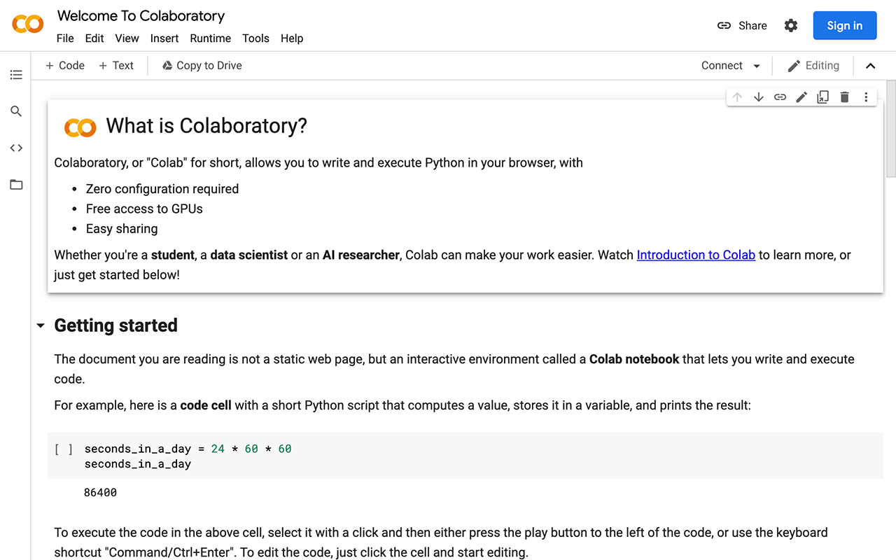

PPOL 5203 - Data Science I: Foundations
Week 1: Introductions, Installations, IDEs, Command line
Professor: Tiago Ventura
2023-08-29
Welcome to Data Science I
Plans for Today
Data Science for Public Policy, Computational Social Science, or why are we here?!
Goals of the course
Course Logistics
Introductions
IDEs
- Jupyter
- Quarto
Introduction to Commandline
Why are we here?
Rise of the digital information age
Real Time Data: Mobility, Credit Card Usage, Expenses…

New Data Formats: Image, text, videos..

Online Research
Powerful and Cheap Computer Power
As a consequence:
Abundance of data we can use for research and governments can use to make better decisions
Novel research questions
New ways to answer old, long-standing research questions
New technologies also have social implications and can generate important policy questions.
Privacy issues
Use of technology by bad actors.
Use of technology by governments to censor/monitor citizens.
etc…
Policy scholars need to be equipped for these challenges
An example: Merging Voter Files with Twitter Data
What it looks like…

All the steps + Tools .... so far ...
Step 1: Processing 180M voter files ~ 5 terabytes
- HPC + Python + Spark
Step 2: Find Matches between voters and Twitter users and Neighboors
- HPC + Python
Step 3: Estimate/Impute Ideology for voters and neighboors
- Juggles across multiple dataset (census, precincts, twitter networks) + Python and R
Step 4: Run the analysis
- R
Discussion: New Questions vs Social Implications vs Ethical Challenges
Data Science for Public Policy
Data Scientist for Public Policy focuses on computational approaches to solve/understand Policy Problems.
A part of a larger field on computational social scientist with a more policy-focus.
What is social science? It refers to a domain of study - social phenomena:
- Encompasses many scales: human psychology, language, economic behavior, political systems, policy problems
- Involve many approaches: qualitative interviews, statistical analysis, simulations
What is Data Science?:
- Use often large-scale data + algorithms to answer questions
Readings
Bit by Bit: Social Research in the Digital Age By Mathew Salganik
Goals of the course
The goal of this course is to teach you:
Computational thinking: how to approach problems and devise solutions from a computational perspective.
Get you started on Python and a bit of SQL for applied data science; lay the foundations for the remainder of the core sequence
Workflows and tools: Git/Github + Commandline.
PPOL 5203 - Data Science I: Foundations
What we will cover
Logistics
Communication: via slack. Join the channel!
All materials: hosted on the class website: https://tiagoventura.github.io/ppol5203_fall_2023/
Syllabus: also on the website.
My Office Hours: Every thursday from 4 to 6pm. Just stop by!
Canvas: Only for communication! Materials will be hosted in the website!
Datacamp: Additional exercises! I will not assign modules for you!
05:00
TA
Sierra Sikorski
- Email: sps126@georgetown.edu
- Office Hours:
- Every Tuesday 2pm (in person, old north)
- Every Wednesday 2pm (remote via Zoom)
Evaluation
| Assignment | Percentage of Grade |
|---|---|
| Participation/Attendance | 5% |
| Coding Discussion | 5% |
| Problem sets | 50% |
| Final Project | 40% |
Problem Sets
Individual submission through GitHub.
| Assignment | Date Assigned | Date Due |
|---|---|---|
| No. 1 | Week 2 | Before EOD of Friday of Week 3 |
| No. 2 | Week 4 | Before EOD of Friday of Week 5 |
| No. 3 | Week 6 | Before EOD of Friday of Week 7 |
| No. 4 | week 8 | Before EOD of Friday of Week 9 |
| No. 5 | November 10 | Before EOD of Friday of Week 111 |
EOD = 11:59pm!
Final Project
You will work on randomly assigned groups!
The project is composed of three parts:
- a 2 page project proposal: (which should be discussed and approved by me)
- an in-class presentation,
- A 10-page project report.
Due dates and Points:
| Requirement | Due | Length | Percentage |
|---|---|---|---|
| Project Proposal | October 31 | 2 pages | 5% |
| Presentation | December 5 | 10-15 minutes | 10% |
| Project Report | December 12 | 10 pages | 25% |
ChatGPT
You are allowed to use ChatGPT as you would use google in this class. This means:
Do not copy the responses from chatgpt – a lot of them are wrong or will just not run on your computer
Use chatgpt as a auxiliary source.
If your entire homework comes straight from chatgpt, I will consider it plagiarism.
If you use chatgpt, I ask you to mention on your code how chatgpt worked for you.
Be mature and make smart decisions. You will not be able to cheat on a coding interview, remember you are a master student now!
Introductions
About me
Professor Tiago Ventura (he/him)
- Assistant Professor at McCourt School.
- Political Science Ph.D.
- Postdoc at Center for Social Media and Politics at NYU.
- Researcher at Twitter.
Research Interests:
- Social media and politics
- Computational methods
- Focus on Global South
Outside of work, I enjoy watching soccer and reading sci-fi.
Sometimes I enjoy soccer while working!
And I am from Brazil!
Quiz!
Which programming language did I use the most at?
PhD
Postdoc
Twitter
A comment from the pre-course survey
Hi professor Ventura! I noticed that we gonna learn multiple data analysis tool this semester and I am definitely a novice of data science. I am little worried about how can I master all of them without being confused, because some commands might be very similar.
Your turn!
Name
(Briefly) what you were up to prior to the DSPP
If you could have any data source at your disposal, what would it be?
Let’s take a break!
10:00
Survey Results
Summary of the survey
75% of you have some experience with Python.
42% of you have some with SQL and 42% have none (which is great for the intro purposes of this course!)
NONE of you were using primarily Python in your work before!
- 30% using R and 30% using Stata.
A few still do not have Python/Jupyter/Github in your laptops. If you are having issue after today, talk to Sierra.
Main Policy Areas:
- Social Media/Tech (Thank you, my dear students. Not so much for you Elon!)
- International Development (let’s talk war, peace and RCTs)
- Education (Gonna get some data with Professor Johnson)
Transiton: Coding!
Jupyter:
See Jupyter Notebook in the Class Website
Quarto
See Quarto Notebook in the Class Website
Command Line
See Command Line Tutorial in the Class Website
See you in two weeks!
Data science I: Foundations
Social Media Data